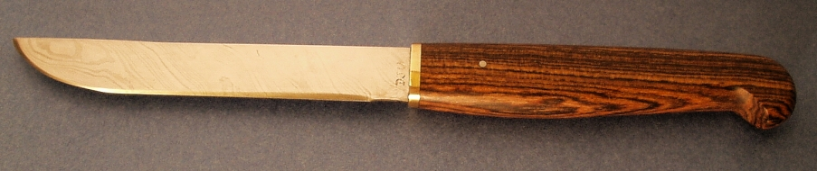
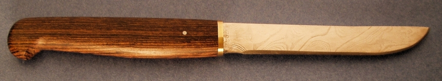

A 4 1/2 Inch Steak Knife
May 2002
The blade has 82 layers of mild and O1 which I twisted to give a star twist pattern. However, there was a serious fault in one side of the blade and when I ground it out I had lost more steel on the side which shows the "star twist" pattern than on the other "maiden's hair" patterned side. The handle is Mexican Rosewood with a brass spacer and one steel pin.
After finishing this knife I realized that the pin makes it look like the tang is really short. It does, however, extend 3/4 of the handle length. For this reason I have always subsequently placed a pin near the end of the tang, so it is obvious how far it extends into the handle.
